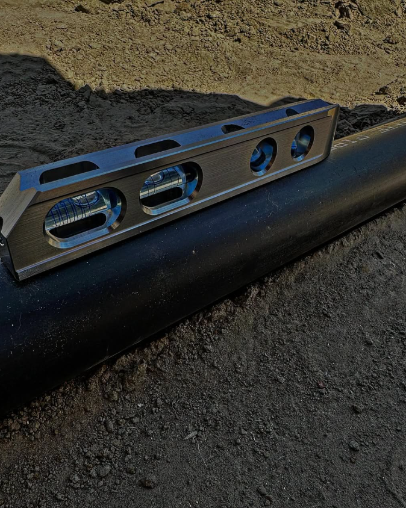
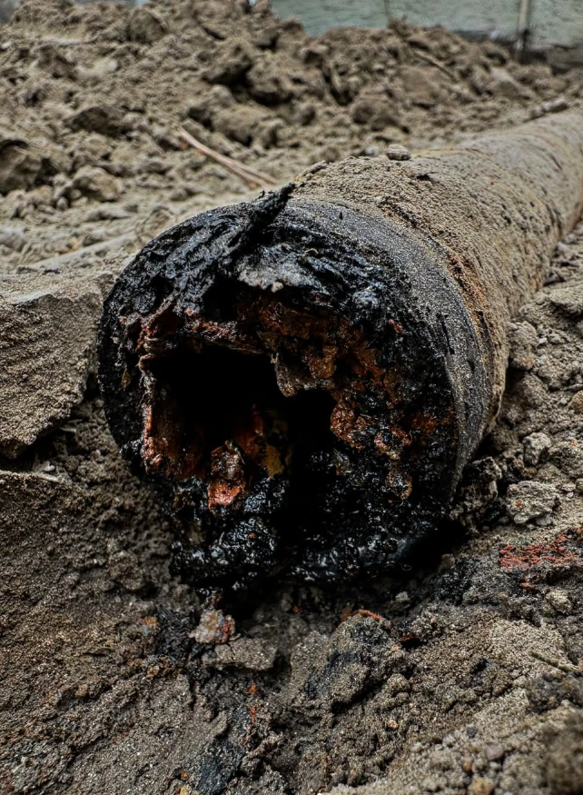

Plumbing & Sewer Specialists
Straightforward plumbing and sewer service for homes and businesses across LA and Orange County. Available 24 hours a day, 7 days a week.
Core Services
Focused service for plumbing and sewer problems that cannot wait.
Drain Cleaning
Clear stubborn clogs and restore proper flow in residential and commercial drain lines.
Sewer Inspections
Camera inspection to help locate blockages, damage and other sewer-line concerns.
HydroJetting
High-pressure line cleaning for heavy buildup and difficult drain or sewer obstructions.
General Plumbing
Professional help for everyday plumbing repairs, troubleshooting and service needs.

Reliable Service, Day or Night
Roper Plumbing & Rooter serves Los Angeles and Orange County with 24/7 plumbing and sewer service. One direct number for drain, sewer and general plumbing needs.

BeforeAfterSee The Difference
Drag the slider to compare the old line with the replacement installation. This section is ready to expand as more Roper project photos come in.
Call About Your Plumbing
Hydrojetting and high-pressure drain cleaning.

Sewer camera inspection and line diagnostics.
Underground line condition before replacement.
Service Areas
Choose your county, then select your area for locally focused plumbing and sewer information.